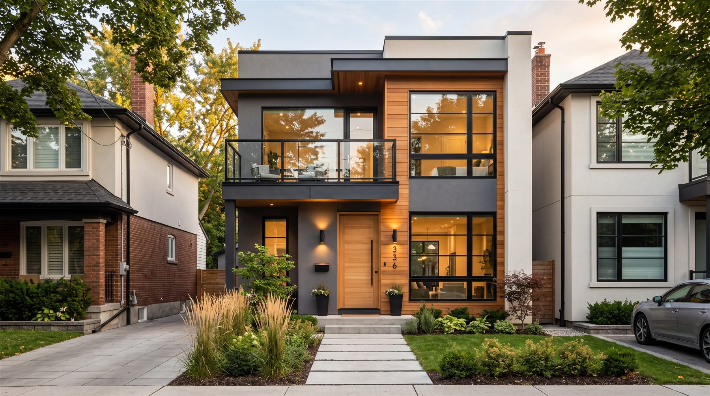

Projetos estruturais
Planejamento técnico e detalhamento para transformar a ideia em uma solução executável.
Engenharia civil com visão de futuro
Uma proposta de site para apresentar serviços, projetos e a trajetória de Tiago Nascimento com clareza e personalidade.
Apresentação profissional e áreas de atuação a confirmar com Tiago.

Imagem gerada por IA · uso ilustrativo01 / O que podemos apresentar
Estas frentes de serviço vieram da primeira versão. O escopo final de atendimento será confirmado com o profissional.
Planejamento técnico e detalhamento para transformar a ideia em uma solução executável.
Organização das etapas da obra, com atenção a cronograma, custos e qualidade.
Análise e registro técnico para apoiar decisões com informação clara.
Uma apresentação possível para intervenções, adequações e orientação técnica.
* Serviços e descrições são uma proposta editorial. Validar antes da versão final.
Da primeira conversa ao último detalhe, clareza faz a diferença.
02 / Acervo visual
As imagens foram geradas por IA para demonstrar a proposta visual. Não representam pessoas nem obras reais de Tiago.
Galeria ilustrativa. As pessoas retratadas não representam Tiago. Sua trajetória e fotos reais precisam de validação antes da versão final.
03 / Quem está à frente
Tiago Nascimento — Engenharia Civil
Esta área foi desenhada para contar a trajetória do profissional com fotos e informações verificadas. Formação, registro CREA, região de atendimento e experiência ainda aguardam confirmação.
04 / Jornada proposta
Estrutura sugerida para explicar o atendimento. As etapas reais serão ajustadas com Tiago.
Uma conversa inicial para reunir objetivos e contexto.
Escopo, prioridades e próximos passos apresentados com clareza.
Comunicação organizada durante as etapas combinadas.
05 / Próximo passo
Esta é uma prévia visual. Os canais de contato e o formulário serão definidos e testados antes da publicação final.
Contato em configuração Não informe dados pessoais nesta prévia.